Soll ein Zusammenhang dargestellt werden, der sich durch die Gleichung
| Beispiel |
|
Das OHMsche Gesetz lautet 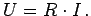 Die Spannung U läßt sich als Funktion von zwei Variablen mit Hilfe ihrer Niveaulinien darstellen. Wählt man R und I als kartesische Koordinaten, dann entspricht jedem Wert 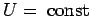 eine Hyperbel. Aus der Abbildung kann man zu jedem Wertepaar R,I das zugehörige U ablesen, aber auch zu jedem R,U ein I und zu jedem I,U ein 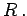 Dabei ist stets der Bereich der einzelnen Variablen zu beachten. Für diese Abbildung gilt 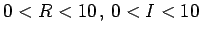 und 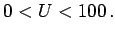 |
Hinweise:
durch ein Nomogramm mit Geraden darstellen. Verwendet man Funktionsskalen 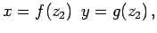 dann wird jede Gleichung der Form
für die Variablen z1,z2 und z3 durch zwei Scharen achsenparalleler Geraden und durch eine beliebige Geradenschar wiedergegeben.
| Beispiel |
|
Durch Anwendung von logarithmischen Skalen läßt sich das OHMsche Gesetz durch ein geradliniges Nomogramm wiedergeben. Durch Logarithmieren von 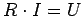 erhält man 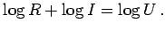 Setzt man 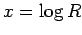 und 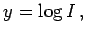 dann ergibt sich 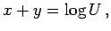 d.h. eine spezielle Form von (2.286). Das dazugehörige Nomogramm zeigt die folgende Abbildung. |